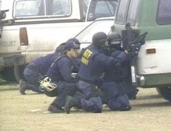

Thuggin' it incognito: An armed enforcer for one of the Regime's official criminal gangs, the ATF, decked out in the familiar terrorist hood. Any resemblance to an anonymous hooded medieval executioner (below, left) is entirely ... appropriate.
Thuggin' it incognito: An armed enforcer for one of the Regime's official criminal gangs, the ATF, decked out in the familiar terrorist hood. Any resemblance to an anonymous hooded medieval executioner (below, left) is entirely ... appropriate. In a republic, accountability is indispensable. In a dictatorship, it is impermissible.
Ryan Horsley of Twin Falls, Idaho can testify from first-hand experience that the Regime ruling us is seeking to criminalize citizen efforts to hold its agents accountable for their misconduct.
Despite the fact that he's not an anti-government radical -- he is chairman of the local planning and zoning board, and sits on the local draft board, as well -- Horsley seems to be an upstanding and respectable person who is making an honest living providing a genuinely indispensable public service: Putting firearms in the hands of the citizenry.
Which is all that is necessary in order to attract the Regime's malevolent attention.

A year ago the squalid extortion ring called the Bureau of Alcohol, Tobacco and Firearms -- a branch of the Leviathan that exists without so much of an echo of a whisper of a hint of constitutional legitimacy, for the sole purpose of providing secure, albeit socially useless, employment for reprobates, criminals, and degenerates -- attempted to shut down Red's. Claiming that the store had committed numerous "willful" violations of federal paperwork regulations, the ATF revoked the store's federal firearms license.
This tactic has been used by the ATF to drive tens of thousands of federally licensed firearms dealers out of business, most of them succumbing to the financial pressures of battling tax-funded bureaucratic parasites. The same method was used to shut down another gun dealer in Twin Falls.
Ryan Horsley and his mother, Terry, outside their-family owned gun shop in Twin Falls, Idaho.

But Horsley -- a telegenic, articulate, and determined individual -- decided to fight back, both in court and through a direct outreach to the public. Accordingly, he created a very well-stocked and accessible blog to publicize the plight of his business, networked with like-minded activists, and sued the ATF. He secured a preliminary injunction in March 2007 from federal Judge Edward Lodge that permitted his store to continue operating until the case came to trial.
The two-day trial took place on March 4-5, and testimony confirmed what honest observers of the case had long known: The "willful" paperwork violations committed by Horsley and his associates were ridiculously trivial. For example, ATF inspector John Hansen gravely testified that of 970 sales records reviewed by the ATF at Red's, some 150 had errors. On cross-examination, Hansen grudgingly admitted that most of those "errors" consisted of "would-be gun purchasers putting a `Y' or an `N' to indicate yes or no answers to a required questionnaire," according to an Idaho Statesman account.
Once again: This supposed infraction accounts for "most" of the paperwork errors found by the ATF, and on this basis the agency affected to find the business in "willful" violation of federal firearms laws.
The agency claims that inspectors found 10 firearms sold by Red's for which no proper accounting had been made. Bear in mind, however, that Judge Lodge, in granting Horsley's injunction, made a finding of fact that the ATF had practiced exceptionally shoddy bookkeeping. Lodge also ruled that allowing the shop to remain open posed no danger to the public. It's doubtful that a federal judge would have made such a ruling had any plausible evidence existed that it had displayed culpable negligence in permitting firearms to fall into the hands of the criminal element (apart, that is, from government employees who purchased weapons there).
The ATF has been conducting its jihad against Red's since 2000. It claims to have found a handful of violations in 2000 and 2005; however, inspections in 2001 and 2007 failed to turn up any problems -- and this certainly wasn't for a lack of looking. Horsley notes that his store had a 99.6% success rate for the ATF audit in 2005, which isn't the kind of score they would have achieved if they had been flagrantly violating federal requirements.
Horsley also pointed out to Pro Libertate that "Every time the ATF sends someone here to conduct an inspection, I've called Sheriff Tousley, with whom I've had a very friendly and cooperative relationship. But the ATF, as far as I know, never paid the Sheriff the courtesy of letting him know when they're here. Sheriff Tousley had told me more than once that this really frustrates him, because he is the chief law enforcement officer in the County."

My kind of store -- if it sold precious metals and used books, I would never leave: Alas, Blue Lakes Sporting Goods in Twin Falls was driven out of business by the execrable ATF a few years ago.
On the strength of Judge Lodge's favorable findings in 2007, and the solid case his side presented in court, Horsley is confident that the final ruling -- which is due sometime in early Summer -- will be favorable. This would be something akin to a miracle, given the agency's track record in shutting down honest gun dealers and the tactics it has used to avoid congressional oversight.
"We've spent about $200,000 in fighting the ATF, and I don't know how many hours of our time we've invested in this fight as well," Horsley told me. "Most FFLs in this position simply can't hold out as long. When I went into this I thought this was a misunderstanding that would be quickly cleared up. It wasn't until I started talking with people experienced in these issues that I learned that the ATF almost always succeeds in shutting down targeted firearms dealers."
"They've spent about $3 million in an effort to revoke a $300 federal firearms license," Horsley continued. "That means we, along with other taxpayers, have been footing the bill to have this agency try to put me out of business. And they immediately worked to cut off our representation in Congress: Whenever Rep. [Mike] Crapo, or [Senators] Kempthorne and Craig made an inquiry about my case, the ATF stiff-armed them, telling them that there was an `investigation' underway, and so they couldn't reply to any information requests."
The harassment Horsley's business has endured from the ATF inspired Idaho's Senate delegation, as well as Louisiana Republican Senator John Vitter, to place "holds" on the nomination of acting ATF Director Michael "Maximum Mike" Sullivan, a self-enraptured federal prosecutor from Massachusetts whose disdain for the Constitution is roughly equal to his zeal for civilian disarmament.
Given the fact that Horsley had the financial and political means to confront the ATF, it should surprise nobody to learn that the agency decided, over a year ago, to treat Ryan as a "threat" -- not just a suspected violator of arcane federal regulations, mind you, but a threat. This explains a fascinating ex parte meeting that took place immediately after the second day of the federal trial.
"During the second day of the trial, there were about a dozen ATF employees in attendance, and federal `Court Security' personnel at the back of the courtroom," Horsley recalls. "After the hearing ended, my attorney and I were told to meet in a small room with a couple of federal attorneys and one of the `Court Security' people."
The latter was an individual named David A. Meyer, identified by his business card as a "Judicial Security Inspector" for the US Marshals Service office in Boise.
"Meyer took out a huge, thick file with my name on it," Horsley recalled. "It had all kinds of papers in it, including photographs of me and print-outs from my blog. Meyer told me that he had come to the hearing `for the protection of the ATF.' He went on to tell us about this new law that just went into effect -- the Court Security Improvement Act -- that covers judges, prosecutors, witnesses in federal trials, and other federal officials. He told us that under that new act we could be arrested if we threaten or give out the personal contact information on ATF personnel."
Horsley told Meyer that he had made a point of calling the Sheriff "every time the ATF paid me a visit." The Marshal replied (by Horsley's account) that he was "aware of this," and that "I've not found anything" to suggest that Horsley had threatened or "intimidated" any federal official.
This didn't stop Meyer from making an utterly gratuitous threat of his own, of course, telling Horsley the following (once again, by the gun dealer's account): "Under this law you can be arrested, and I have no problem coming down to Twin Falls and arresting you."
Bear in mind that Meyer, by threatening to use armed force to kidnap Horsley under the color of supposed law, was committing one crime and threatening to commit a second. The crime he committed was assault -- defined in Title 18, Chapter 9 of the Idaho Criminal Code as the "intentional, unlawful threat by word or act to do violence to the person of another, coupled with an apparent ability to do so, and doing some act which creates a well-founded fear in such other person that such violence is imminent."
By his own admission, Meyer had no evidence that Ryan Horsley had ever committed a criminal act of any kind. Yet Meyer was threatening to commit violent acts against Horsley should the gun dealer exercise his constitutionally protected right to criticize the ATF, should one of the agency's gun-grabbers, chair-moisteners or paper-defacers feel "intimidated" or "threatened" by something Horsley published.
The crime Meyer threatened to commit was false imprisonment as part of the same illegal act of retaliation. Title 18, Chapter 29 of the Idaho Criminal Code defines "false imprisonment" as "the unlawful violation of the personal liberty of another." Those convicted of that offense are subject to a $5,000 fine, a one-year jail sentence, or both.
(Continues after break.)

Da Boyz are jus' havin some fun: Gee, guys, are you sure you're safe, given that there are several armed feds surrounding one unarmed guy, whose hands are cuffed behind his back and his head being ground into the concrete? The college student needlessly subjected to criminal assault by these polyester-clad revenue hogs from the ATF was seized as a "suspicious person" because he was wearing a ninja costume as part of a campus activity. It was his misfortune that the ATF was conducting a "Project Safe Neighborhoods" event at the same facility, and the sight of a harmless prankster was too much for these guys -- impotent windsocks, every one of 'em -- to resist.
Furthermore, Meyer indicated designs on either committing or abetting similar crimes against other law-abiding citizens elsewhere in the United States. In his conversation with Horsley, Meyer made mention of Dave Codrea, who publishes an invaluable blog entitled The War on Guns, and another group he referred to as "those ... Jews."
"Those Jews"?
Yes, that's how he described Jews for the Preservation of Firearms Ownership and their chief spokesman, Aaron Zelman, who resides in Hartford, Wisconsin.
In the fashion of a Mafia underboss delivering an extortion threat, Meyer told Horsley that he might want to "pass along" the warning to Codrea and Zelman.
Because those two men are who they are, Codrea and Zelman have have told Meyer what they think of his threats. Zelman's letter is particularly plangent.
Meyer strongly hinted that bloggers like Ryan Horsley and David Codrea might be subject to prosecution in the event that remarks posted on comment threads are construed as threatening or "intimidating" by federal officials covered under the Court Security Improvement Act. As Codrea pointed out in his letter to Meyer, most genuinely alarming comments are posted anonymously. And given that federal agents have dutifully monitored Codrea's blog and Horsley's website, it's hardly unreasonable to speculate that tax-feeders of that kind could be responsible for at least some of those comments.
Would it be tidy if Meyer or somebody of his ilk were to arrest a gun rights blogger on the basis of a comment planted by the same fed who carries out the arrest?
In presenting the account of the meeting between Horsley and Meyer, I've relied entirely on Horsley's version of events. That's because when I called Meyer to get his side of the story, he told me: "The conversation I had with him isn't for publication. You'll have to call the Marshals Service public affairs office in Washington, D.C. to find out anything more about it."


Yeah, it's a bummer when the victims can shoot back, isn't it? Inept, bucket-headed Berserkers in the ATF's employ are repelled by the Branch Davidians on the morning of February 28, 1993. Four of the assailants were killed -- some by friendly fire, others as a result of the righteous use of lethal force by the Davidians. Five innocent Davidians were murdered by the ATF for defending their home and religious sanctuary from the agency's illegal assault. On April 19, the Feds celebrated the anniversary of the Nazi assault on the Warsaw Ghetto by incinerating scores of innocent people inside the Mt. Carmel retreat.That wouldn't be helpful, of course, since (as far as I know) nobody in the Imperial Capital was present during the conversation in question.
Our lives are becoming utterly transparent to the Regime. At the same time, the official dealings of the Regime's enforcers are becoming increasingly opaque. It is as if the Regime had erected an immense one-way mirror permitting them to keep us under surveillance, while withholding from public scrutiny not only the private lives but the official conduct of its enforcers.
A self-important functionary like David Meyer can receive an obese dossier on a harmless, law-abiding gun dealer and use it to threaten to imprison him. But if, heaven fofend, one of us were to publish Meyer's home address or photograph in a way that caused his widdle heart to quivver, he and his colleagues in official crime claim the right to imprison the person responsible for distributing the samizdat in question.
It's been said that the difference between a republic and a "People's Republic" is akin to that separating a chair from an electric chair. The degenerate system under which we live has no noticeable resemblance to the constitutional republic proposed in 1787, but a very strong kinship to the "People's Republic" of East Germany -- another state in which government informants were rife, tree-devouring dossiers on private citizens common, and officious ex-Nazi law enforcement officers shared David Meyer's disdainful opinion of "those Jews."

Dum spiro, pugno!
44 comments:
Everyone knows that the ATF devolved from the bottle-breakers of the prohibition era.
But let's cut deeper than the Constitution. It's a piece of paper with words written on it. Nothing more. That which keeps us free are the ideals we hold within our hearts, and the actions prompted thereby. The Constitution does not protect any of your rights. It just sits there. Its words are warped by those in power whenever they choose. Does anyone think judges, policemen, prosecutors, congressmen and senators care about the Constitution? They make a living by spitting on it.
Until people realize their rights all come from God, nothing will change. Until they realize that our rights are not dependent upon a piece of parchment with ink on it, freedom is at the mercy of the powerful. Until everyone realizes that every human being across the globe, by virtue of his being created in the image and likeness of God, has the unquestionable right to life, liberty and property, and that no one has the right to initiate aggression in any form, we are all slaves to our own idiocy.
I'm tired of playing on the verbal playground of lawyers and judges, prosecutors and policemen. My rights are not dependent upon their interpretation of some words. Nobody wins by playing their word games. The powerful create the rules of that playground. They change them whenever they want. My playground is the one created by God: reality and liberty. Whether anyone recognizes my rights, or whether they deny and infringe them, I still have them.
Don't count on words on a piece of paper to stem the tide of the powerful, and their quest to accrue power and wealth for themselves at your expense.
-Sans Authoritas
Amen, anonymous...
I remember very well the day that the Branch Davidians were assaulted and murdered. The alleged firearms violation that took place was setup by an ATF agent who invoked selling a firearm that I believe was 1/8" too short according to the law.
I was watching CNN coverage of the event and saw the ATF agents on the roof, trying to enter. I saw tanks with fire coming out of their barrels, busting down walls. I started yelling at my wife that the United States of America was murdering its OWN citizens. I was much younger and naive. I could not believe that US citizens on US soil were being shot, burned and murdered by US Government Agents, for whatever their "SUPPOSED" crime was.
I saw Janet Reno on TV, lying and saying that it was her decision to go in (so Bill was spared, and if need be, later could pardon Reno for her crimes). This was as the Clinton adminstration was just getting under way.
I was in total shock. I started asking my neighbors, relatives, those I worked with if they had witnessed the carnage on TV. Everyone either didn't care, or saw the TV and said that the Davidians shouldn't have been ________ (fill in the description, weird, child molesters, outlaws, reclussive, etc). I protested that it was not against the law to be weird, or reclussive, but no one seemed to be bothered.
From that day on, my little dream world of "Government are the good guys" ended. God help us all.
It is always interesting to me that my own descent (ascent?) into political knowledge started with the second amendment. As an avid shooter/reloader I wanted to try understand how some of the insane firearms laws under Clinton I (I fear II is coming) could possibly be reconciled within the 'very clear' context of the second amendment. And from there, the rabbit hole went very deep indeed.
I started coming across gun rights activists who were writing against prohibition II as a harbinger of things to come (and as the previous anon notes BATFE has its roots in prohibition I) and links to sites like LewRockwell.com. And the more I read, the more I realized how far we have sunk into tyranny as a people and a nation.
I've had a few brief email exchanges with Mr. Horsely and also find him to be an honorable man standing his ground against Leviathan. And I've also followed his blog which is well written for someone who's business is providing for the firearms needs of his community as opposed to a professional bloggist.
And while Will's comments may seem to be a bit preferential towards judge Lodge, do not forget that this is the same federal judge that gave a pass to FBI sniper Lon Horriuchi. For those that don't remember, Horriuchi is the gov't sniper that attempted a two-fer on Vicki Weaver and Kevin Harris killing only Weaver as she held an infant child in her arms (I'm sure he had personal points deducted for his failure at the annual 'Good Ole Boy Roundup' for not getting both). Lodge, if he were properly exercising his powers, should have had Horriuchi publicly 'strung up'. Remember also, that the whole incident was the result of an ATF (now ATFE) sting over one quarter inch of shotgun barrel length in an attempt to turn Randy Weaver into an informant. Judge Lodge deserves to rot with the rest of the tax trough parasites.
Unfortunately, I could probably go on for days on this topic. I can only hope that it serves to open the eyes of at least one of the kool-aide drinkers in this country as the topic did for me.
Keep law enforcement local and beware of nationalized police force. As far as anonymity on the web there is none. A nickname or lack thereof won't hide your IP address. Why not use this voice while we still have it.
Yep. Good old ATF. Selfishly, if I could only purge one gang, it would be they. I hate that gang. Everyone who cares about freedom can write lengthy diatribes about how evil it is.
Yet, write your Congressman or Senator about them, and what do you get? "The right to keep and bear arms is very important to me..blah, blah,... the atf is an important crime fighting department..blah, blah." AHHH!!!
The closer an empire is to collapsing the more nasty and bellicose it becomes towards its own people. I find it ironic that communist China for all intents and purposes tends to be much more free than the supposedly free USA. This insight by the way is based upon conversations I have has with two individual that I know very well who have been living there for the last decade.
The implosion of this wretched police state will occur. Insolvency will force it to. I have my doubts any of these paristic goons would ever work for free.
I think calling federal agents criminals is an insult to criminals everywhere.
Mr Grigg,
Did you watch the Jericho tv show?
http://www.boston.com/ae/tv/articles/2008/03/27/jericho_too_cynical_for_the_times/
The Waco catastrophe could have been avoided. The local sheriff had dealt with the davidians without any incident even when dealing with firearms violations. Enter "Waco:The Big Lie" in your search engine of choice. It is a 15yr old video that shows agents shooting their own and a flame throwing tank.
"Despite the fact that.... he is chairman of the local planning and zoning board."
I hope Mr. Horsley will read
Planning and Zoning a Prelude to Disaster when he gets a chance.
I am angry for that we allowed the ATF to be formed in the first place.
James Madison:
“The freemen of America did not wait until usurped power had strengthened itself in exercise, and entangled the questions in precedents; they saw all the consequences in the principle, and they avoided the consequences by denying the principle.”
Anonymous @ 11:54 PM --
First of all, please call me "Will."
It's interesting that you bring up "Jericho," because my family just recently started watching the episodes on Joost. Is it still being broadcast on TV? We don't have a television, and haven't since about 1999 or so.
Anonymous @ 11:54 PM --
First of all, please call me "Will."
It's interesting that you bring up "Jericho," because my family just recently started watching the episodes on Joost. Is it still being broadcast on TV? We don't have a television, and haven't since about 1999 or so.
Speaking of the Second Amendment ... even if the Supreme Court does find a personal right to bear arms in the current challenge to Washington DC's handgun ban, the Court probably will depth-charge it by confirming that "reasonable regulation" is permissible. The ATF, of course, will be part of the "reasonable regulation" at the federal level.
As the first post above emphasizes, words on paper can't protect us when the culture has changed to one that doesn't value liberty, or even understand what it is.
The Constitution requires the states to honor each others' administrative acts. For example, your marriage license will be accorded validity in another state, as will your drivers license. But bring your pistol into anti-gunner New Jersey or New York City with a Pennsylvania carry permit, and you'll be spending a year in prison for your status offense. The Supreme Court, I'm guessing, will find this state of affairs perfectly acceptable. Gotcha!
Sure thing, Will. The reason I brought Jericho up is the show had a number of topics very similar to what you are discussing on your blog. I am not sure why the link did not work, but the article is from Boston.com and it deals with how the show took a view far too cynical of the state to be a success with the average American.
The main point of the article is how in virtually every other tv show, the state may have a few bad apples, but they are generally run by well meaning people. Not so in this television series, where the government is basically evil. If you just started watching the show, I don't want to ruin the plot for you -- I hate it when people do that to me! -- but courageous citizens using their own privately held weapons taking on a corrupt Fascist regime is one of the main themes of the show.
The show was accused of being liberal by a number of Neo-Cons, but it was actually more of a Paleo-Libertarian mindset than anything. A show where the mayor -- who was attending the new nation's Constitutional Convention -- stated that it is a lot easier for the government to make its people do what it wants when they don't have a 2nd Amendment is not exactly liberal and very much different from typical Hollywood writing.
It also featured private citizens killing corrupt government contractors, policemen, and troops. There was even one event from this season that seemed to be clearly based on a Ruby Ridge style incident. Again, not exactly talking points written by Nancy Pelosi.
Anyway, detailed discussion like this is for another day. The show was canceled -- again -- by CBS after the second season. However, there is a huge outcry on the internet relating to how out of date the ratings system is and it looks as if there is a good possibility that the show might end up on the SciFi network or some other cable channel. It is basically too intelligently written and too cynical to be a success on network TV when it is going up against the CSIs and American Idols of the world.
By the way, I believe all of the shows from this season are up on CBS.com.
P.S. I am sorry if my post has "RunAmok," but this was the most Libertarian show I have ever seen on television and was really the only show I went out of my way to watch. This is striker18, a fan of yours from way back, all the way back to the Otherground days. I will finish up by saying you are doing an outstanding job with your blog and I read it on a daily basis!
Hi Will,
Yes, Jericho is still on TV (although it may end up being canceled - again - at the end of this season). It's one of the few shows that I actually look forward to watching.
Season 1 is available on DVD and I would imagine season 2 will be available once it has completed its run.
striker18! What a wonderful surprise to hear from you again. Dev and I chat from time to time, and your name has come up on occasion. Good to know that the nucleus of the Otherground Freedom Zealot movement remains intact.
Thanks a million for reading the blog, and especially for the kind comments about it.
I was dimly aware of the fact that Jericho had a "Firefly"-style following among liberty-fixated viewers, and after watching the first two episodes I could begin to understand why. I notice that Pastor Chuck Baldwin, the aspiring Constitution Party presidential candidate, has a column today extolling Jericho, as well.
Looks like I'll have to get the series on DVD. (The only other recent show I've bought on DVD is the re-tooled Battlestar Galactica, known to some as nBSG.)
Thank you for writing this. Superbly done.
I took the liberty of submitting it to KeepAndBearArms.com Newslinks on the off-chance no one beat me to that, which ought to get it some wide exposure in the RKBA community.
The only way to fight creatures of darkness is by shining a bright light. The lead picture you chose says it all, does it not?
Thanks for remembering me! I really have been fortunate to have been exposed to a lot of radical libertarian views from such an early age. Around the same time that I was reading your posts -- from a MMA forum of all places! -- I was lucky enough to have a Austrian Economist as my first econ teacher in college.
In fact, he was such an influence that I changed my major to economics and ended up getting a degree in it with the intention of going to graduate school. After taking classes with non-Austrians -- which is almost every teacher in economics -- I can understand why the general public manages to both hate and not understand economics. The combo of the work I read on Lewrockwell.com, your columns, and my Austrian prof put me on the right path that I will forever be grateful for. Who knows what would have happened had I continued to listen to Rush, watched Foxnews, and read National Review? I would probably be calling you a traitor right now :)
I am not sure if Buddhadev ever mentioned it, but I actually subscribed to TNA for years based on reading your posts on the OG. When you were fired, I sent them a letter informing TNA to cancel my subscription because they had become exactly what they had preached against for years about the GOP.
One other thing before I ramble on too long. I also remember around the same time -- very early 2000s -- when we both described ourselves as constitutional conservative types. I don't want to speak for you, but I know that after witnessing what the Neo Cons were able to do with complete power in D.C. that it did not take long for me to become a Paleo-Libertarian.
I also have to say that it is quite amazing how so much of what was underground several years ago is now mainstream. Mixed Martial Arts, Ron Paul, Austrian Economics with an emphasis on fiat money and monetary policy, etc. Needless to say, Ron Paul's popularity with the youth in America has given me hope that one day the tide can be reversed.
Michael,
Unfortunately, CBS has already announced that they canceled Jericho again after the series/season finale last Tuesday. The only positive sign is that the SciFi network has also announced it is attempting to buy the rights of the show away from CBS. It is probably a lot better fit for a cable network anyway.
God bless you for writing this!
ineffabelle -- blessings to you, as well, and kudos on a really cool cyber-handle!
In all REALITY, instead of A.T.F., it should be:
A.T.P.;
Alcohol
Tobacco
& Pornography
For, "Firearms" are NOT a 'vice', but a Right....
EDQ: Not unless you can show where vice falls within the enumerated delegated purview of the fedgov, otherwise, it's just another unConstitutional power grab and ingress point for further abuse and corruption.
Besides which, the Ninth and Tenth Amendments come into play here, too. I'd argue I do have a right to my single malt and maduro, which I'll probably enjoy tonight, it being Saturday and all, and anyone infringing on that is committing a criminal act of aggression, whether the majority agrees or not. As for porno, I'm not smart enough to draw a line much beyond that which employs minors or unwilling participants--but I'm a bad judge--I think most of what I see at supermarket checkout counters in terms of "womens' magazines" and tabloids qualifies, and I respond by not buying it.
Funny thing about free will. We actually have the capacity to result in our own damnation. Our job is to choose for ourselves, not to impose our choices on others.
Alcohol tobacco and firearms! Who's bringing the chips?
David Codrea's comment is right on.
If there are to be any vice laws on the books, -which I would not support- they should never extend beyond the state level. This way, the virtues of federalism can be enjoyed by all, just as the founders intended.
Too many Evangelical Christians believe that we need to employ either the theonomist position, which includes such practices as the stoning of disobedient children and the forced marriage between a rapist and his victim, or the equally untenable dispensationalist position, which holds that if any of God's OT laws are not also duly noted in the New Testament it is morally permissible. Both of these models prove inadequate as we are not ancient OT Israel, nor should the NT be regarded as an exhaustive resource for the determination of legal precepts. The Bible, in both the Old and New Testaments, provides us with a moral foundation and is our primary indispensable guide in the formation of much of our nation's legal bulwarks..... Well, it used to be anyway.
One thing I remember clearly about the Waco tragedy was the fact that the TV crews were there from the beginning filming the whole sad charade. Now what does that tell you? Simple. It was a staged media event gone wrong. Cameras, lights... Action! Except someone forgot to tell the Davidians it was all an act and their part was to lay down and take it.
David Codrea - Perhaps you should have a look at the act which caused the "Whiskey Rebellion". As well as the Alien and Sedition Acts. Congress DOES have the enumerated authority to levy duties and taxes. If We The People don't agree wih it, then we have a right to seek redress.
Anonymous -
"The first question is answered at once by recurring to the absolute necessity of the case; to the great principle of self-preservation; to the TRANSCENDENT Law of Nature and of Nature's God, which declares that the safety and happiness of society are the objects at which all political institutions aim, and to which all such institutions must be sacrificed."
- James Madison, Federalist #43.
And, to both you and David Codrea:
Our government was legally delegated the authority to seek the means to: "insure domestic Tranquility", and "promote the general Welfare". A nation of alcoholics, as well as drug and sex addicts will hardly achieve those ends. For, those vices turn us into a third rate nation, as we are quickly becoming now. All one has to do is examine the fall of Rome, and other once great nations to see the truth of that historical reality.
Taxing vices is certainly much better than some of the other alternatives. Vices cause moral, physical, mental and spiritual decay. Not only to the person caught in the grasp of them. But, generally to all of those to whom they have relation to. And, the adverse effects of using them cause financial strains on society which effect everyone. As well as:
"A little leaven leavens the whole lump."
The rest of us shouldn't have to bear the whole burden of paying the price for others exercising their idea of "freedom". If you want to play, then you had better be ready to pay.
And, I certainly hope that no one considers that I'm in support of ANY of the ATF's actions by my previous comments.
I'm of the opinion that they have NO constitutionally legal delegated authority over firearms PERIOD. Just the opposite being the case; they are EXPRESSLY RESTRAINED from it. That such a bureau, as far as concerning firearms go, is an usurpation and a tyrannical exercise of power.
The government DOES however, have the Constitutional authority to tax and provide for collection of those taxes, (within reason). But NOT on a Constitutionally secured right that has the prohibition of "shall NOT be infringed" prefixed to it.
EDQ,
Yes, vices do cause moral decay, and the moral foundation of our Republic is based on the Judeo-Christian ethos -as I stated. But prohibition laws against vices will not change the inner man. That requires a spiritual solution, not a political one. If a nation becomes mired in an other-wordly pantheism; for example, as in India where neglect and human suffering are widespread, or in a nation steeped in abject secular hedonism, all the vice laws on the books wouldn't prevent the moral collapse of a nation. Remember, our Constitution was intended for a moral and religious people; it is entirely inadequate for the governance of any other. Just because the Constitution allows for the Congress to "...lay and collect taxes, duties, imposts and excises.." doesn't mean they have a mandate to tax us to death. The concept of federalism works well in that it provides the opportunity for the states and localities to establish their own edicts based on their own local social mores and thus would also maintain local accountability without involving Leviathan-on-the-Potomac. The absence of vice laws will not create a nation of alcoholics, drug addicts or sex addicts. In 1880, the U.S. didn't have hardly any prohibition laws against vices and yet the nation seemed to be functioning quite well. Yes, a nation will suffer social decay and collapse if immorality becomes rampant, but I don't wish to give the Power Elite any pretext over exaggerated "crises" to erect a totalitarian police state. According to Dr. R.J. Rummel, totalitarianism in the 20th century killed close to 400 million innocent people. Vices didn't do that; the State did. My Bible tells me that the eschatological end-time scenario does not depict a "Mad Max" styled global anarchy, but an absolute global, panopticon surveillance state and global totalitarian dictatorship run by a frontman of an oligarchy bent on caesar worship. My main concern is the State, and its deadly abuses of power.
"Our government was legally delegated the authority"... EDQ
Now wait a minute there. This authority was delegated to themselves by themselves from the beginning. Farmer Tom out plowing the fields had no say as to the form of this "government" or the ever increasing burdens these mere pieces of paper, many claim as being the work of divine authorship, would forever lay on the people. The majority of the citizenry didn't have any say or knowledge one way or the other as to what was being wrought in their name. "We The People"... my eye! Nor should generations unborn thereafter be bound to this "contract" or tasked to forfeit their wealth to support it in perpetuity while the authors have written loopholes to excuse themselves from any accountability. I find Christian statists just can't get enough of government "big sticks" to bully and bludgeon undesirables.
Lysander Spooner put it quite plainly.
"Inasmuch as the Constitution was never signed, nor agreed to, by anybody, as a contract, and therefore never bound anybody, and is now binding upon nobody; and is, moreover, such an one as no people can ever hereafter be expected to consent to, except as they may be forced to do so at the point of the bayonet, it is perhaps of no importance what its true legal meaning, as a contract, is. Nevertheless, the writer thinks it proper to say that, in his opinion, the Constitution is no such instrument as it has generally been assumed to be; but that by false interpretations, and naked usurpations, the government has been made in practice a very widely, and almost wholly, different thing from what the Constitution itself purports to authorize. He has heretofore written much, and could write much more, to prove that such is the truth. But whether the Constitution really be one thing, or another, this much is certain --- that it has either authorized such a government as we have had, or has been powerless to prevent it. In either case, it is unfit to exis"
Anonymous - Agreed 110%. Which of course leads us to one of the whole intended purposes of Amendment II. And, why We The People need to get the perverse usurpations overturned. We either rouse the same spirit that moved our forebears to action. Or, we are going to be enslaved/socialized as most of the rest of the world is at present. We ALL see the writing on the wall, (with the exception of the blind sheeple). But, seeing and doing something about what is seen, is a whole different story....
Mot -
"The federal and State governments are in fact but different agents and trustees of the people, constituted with different powers, and designed for different purposes. The adversaries of the Constitution seem to have lost sight of the people altogether in their reasonings on this subject; and to have viewed these different establishments, not only as mutual rivals and enemies, but as uncontrolled by any common superior in their efforts to usurp the authorities of each other. These gentlemen must here be reminded of their error. They must be told that the ultimate authority, wherever the derivative may be found, resides in the people alone, and that it will not depend merely on the comparative ambition or address of the different governments, whether either, or which of them, will be able to enlarge its sphere of jurisdiction at the expense of the other. Truth, no less than decency, requires that the event in every case should be supposed to depend on the sentiments and sanction of their common constituents."
- James Madison, Federalist No. 46.
The United States Constitution was ratified by the People of that day - NOT the government. We The People ARE the "final", "legitimate", "supreme", (when clothed in our Constitution), and "ULTIMATE" authority. We are in the situation that we are in because PEOPLE STOPPED HOLDING OUR SERVANTS FEET TO THE FIRE.
"[As to] the question whether, by the laws of nature, one generation of men can, by any act of theirs, bind those which are to follow them? I say, by the laws of nature, there being between generation and generation, as between nation and nation, no other obligatory law."
- Thomas Jefferson to Joseph C. Cabell, 1814. ME 14:67.
"The First Law of Nature is that every man ought to endeavour peace, as far as he has hope of obtaining it; and when he cannot obtain it, that he may seek and use all helps and advantages of war."
- Thomas Hobbs, "Leviathan", (Outlines the Laws of Nature), 1651
We ALL see what our [supposed] SERVANTS are doing. And, we were AMPLY WARNED by the men that framed our form of government of the dangers that lay ahead. But, we were more concerned with wine, women and song than doing our civic duty. And now we are paying the price for our folly. Unfortunately so will our posterity.
"Those who expect to reap the blessings of freedom must, like men, undergo the fatigue of supporting it." - Thomas Paine
WE were warned, yet WE let it happen. "Power corrupts, and absolute power corrupts absolutely." That is a long known MAXIM, that We The People, both past and present ignored. So then, whose fault is it REALLY?
When the morals of a people degenerate, their government becomes despotic in order to enforce rule. Again I ask, whose fault is it REALLY?
gents,
i think what we get out of the supreme court decision will be far worse, if not support/authorize, what is planned after the november elections. i think we need to all start pricing PVC pipe and desicant.
rick
Source: NewsDay
An 80-year-old church deacon was removed from the Smith Haven Mall yesterday in a wheelchair and arrested by police for refusing to remove a T-shirt protesting the Iraq War.
Police said that Don Zirkel, of Bethpage, was disturbing shoppers at the Lake Grove mall with his T-shirt, which had what they described as “graphic anti-war images.” Zirkel, a deacon at Our Lady of the Miraculous Medal in Wyandanch, said his shirt had the death tolls of American military personnel and Iraqis - 4,000 and 1 million - and the words “Dead” and “Enough.” The shirt also has three blotches resembling blood splatters.
Police said in a release last night that Zirkel was handing out anti-war pamphlets to mallgoers and that mall security told him to stop and turn his shirt inside out. Zirkel refused to turn his shirt inside out and wouldn’t leave, police said. Security placed him on “civilian arrest” and called police. When police arrived, Zirkel passively resisted attempts to bring him to a police car, the release said.
But Zirkel said he was sitting in the food court drinking coffee with his wife Marie, 77, and several others when police and mall security officers approached and demanded they remove their anti-war T-shirts.
MOT,
I am one Evangelical Christian who agrees with you, but I do concede to the many points EDQ raises -but with qualifications. I see no specific enumerated power contained in the Constitution's seven articles that suggests the central government has the authority to establish federal prohibition laws against alcohol and drug consumption or the federal criminalization of any other vice for that matter. It's a state and local matter. As for the Constitution, it isn't sacrosanct. It could be better. Even the paleo-conservative Joseph Sobran, hardly a Lysander Spooner disciple or a paleo-libertarian, now recognizes that the Articles of Confederation would have been much better than the U.S. Constitution, which he argued was pregnant with the seed of centralism. Patrick Henry, a devout Christian, also did not care too much with the ratification of the Constitution over the Articles of Confederation. Some notable flaws- I think WNG would agree with- are the Constitution's eminent domain powers and suspension of habeas corpus' protections under certain conditions.
I think the TV series 'Jericho' is on to something. The United "State" of America should be broken up into at least three independent states -the North, the South and the West. I kinda like that idea.
Thanks for the heads up, Will.
From Horsley's page at the Gun Owners Foundation website:
These violations typically are abbreviating the city of Twin Falls as T.F. What would we do without such astute BATFE inspectors who catch such sneaky efforts to evade the law! Seriously, such a stupid objection is not even written in any BATFE regulations -- because they have no written procedures for dealers to follow.
Written procedures would make it much harder to play "gotcha." BATFE would have to behave like a real law enforcement agency and look for real bad guys.
This is actually common, unfortunately. I complained about the same thing when I worked for a contractor at a military base back in 2000-2001. There were few precise written SOPs so they could, basically on a whim, cite you for violations and even cancel your contract if you violated a certain "regulation of the moment" as I called it. I hated it. They don't write this stuff down so that YOU don't have any real recourse when you're being cited and be able to claim that you were following the regs as written.
Of course, if you're a private gun dealer and it's the BATFE you're dealing with in this light, it's an entirely different matter. It can mean your livelihood itself is targeted as Mr. Horsley has known now since 2000. The problem is that the BATFE has endless resources (the people's taxes) and private entities have no such luxury.
anonymous @ 8:57PM
I agree with most of your post and can even understand this sentiment:
But prohibition laws against vices will not change the inner man. That requires a spiritual solution, not a political one. If a nation becomes mired in an other-wordly pantheism; for example, as in India where neglect and human suffering are widespread, or in a nation steeped in abject secular hedonism, all the vice laws on the books wouldn't prevent the moral collapse of a nation.
True, it's a spiritual condition and the moral collapse of the nation in question is imminent. Nevertheless, when the people themselves cannot control themselves adequately, the government will pass whimsical laws (that otherwise wouldn't likely be on the books with a more vigilent, knowledgeable, non dependency-minded, moral populace) to restrain the people instead.
Try looking at it from another angle. Many people who have little to no self-control, as is certainly true in today's America or in any secular/pagan society for that matter, are ONLY effectively restrained by laws and regulations. Sure, even laws don't restrain ALL of those kind of folk, but it does restrain most where there exists no internal restraints. Have you never heard anyone say something like, "Hey, I wouldn't do that, man, it's illegal!" or "If I didn't have to worry about goin' to jail, I'd certainly do that."? A person who says that demonstrates in my mind right away, without even having to clarify it, that they are ONLY restrained from doing certain act(s) in question, not because it's harmful, immoral, or otherwise damaging to their physical or emotional being, but merely because it's illegal and they could go to jail. Oh my!
In 1880, the U.S. didn't have hardly any prohibition laws against vices and yet the nation seemed to be functioning quite well.
Of course, but the overall culture of the 1880s was not anywhere near as decadent, depraved, and effeminate as the current culture.
Just to be crystal clear, I don't support this kind of arrangement, either, but historically speaking that's just the way it is. I would actually be a staunch libertarian if ALL prohibitions were rescinded, including those pertaining to all forms of discrimination and allow freedom of association to flourish. Ah, but that won't happen. I hear people all the time yacking about the "War on Drugs" or "War on Prostitution" but nothing on the "War on Christianity" or the "War on Tobacco" or the "War on Guns" (with a few exceptions). I hear nothing on black racism, only white racism, etc., etc.
Here's some nuggets of wisdom:
If a nation expects to be ignorant and free, in a state of civilization, it expects what never was and never will be. - Thomas Jefferson
Those who are ignorant of what true freedom is and, by extension, unbridled by self will be so bridled by the State and possess little if any true freedom. "Freeeeeeeeeeeeeedom!" chants by the ignorant are meaningless and without substance. It's pure emotionalism; admittedly, it all sure sounds good and tickles the ears, though, but that's about it.
We have no government armed with power capable of contending with human passions unbridled by morality and religion. Avarice, ambition, revenge, orgallantry, would break the strongest cords of our Constitution as a whale goes through a net. Our Constitution was made only for a moral and religious people. It is wholly inadequate for the government of any other. - John Adams (emphasis mine)
It might have to be clarified about the "we have no government..." above: WE have no government, meaning OUR constitutional republican system (NOT ANY and ALL governments in existence) is incapable of contending with unbridled human passions. And so it is; ergo, we are faced with a gradually increasing totalitarian system to replace it that CAN restrain human passions....ANY and ALL passions, that is, the good, the bad, the ugly. And so it is; ergo, we are continually losing our true freedom as a consequence because our constitutional republican system can't work in such an environment. It's ONLY adequate for a self-governing, moral populace.
Those people who will not be governed by God will be ruled by tyrants. - William Penn
Speaks for itself. Internal control by self (via the Holy Spirit and our conscience) or external control by tyrants eventually. It's just that simple.
Character is much easier kept than recovered. - Thomas Paine The American Crisis, no. 13 (1783)
I take this as once your character has been compromised in the public arena, it's near impossible to recover it in the public arena and the attendant public trust. That's not to say God won't rebuild someone inside and accept them, but that's not how I see this particular quote.
Only a virtuous people are capable of freedom. As nations become corrupt and vicious, they have more need of masters. - Benjamin Franklin
Again, speaks volumes for itself. Look around our society today and this becomes increasingly quite clear in my mind anyway :(.
Lastly, I'll throw this out:
3 As I urged you when I went into Macedonia—remain in Ephesus that you may charge some that they teach no other doctrine, 4 nor give heed to fables and endless genealogies, which cause disputes rather than godly edification which is in faith. 5 Now the purpose of the commandment is love from a pure heart, from a good conscience, and from sincere faith, 6 from which some, having strayed, have turned aside to idle talk, 7 desiring to be teachers of the law, understanding neither what they say nor the things which they affirm.
8 But we know that the law is good if one uses it lawfully, 9 knowing this: that the law is not made for a righteous person, but for the lawless and insubordinate, for the ungodly and for sinners, for the unholy and profane, for murderers of fathers and murderers of mothers, for manslayers, 10 for fornicators, for sodomites, for kidnappers, for liars, for perjurers, and if there is any other thing that is contrary to sound doctrine, 11 according to the glorious gospel of the blessed God which was committed to my trust. - I Timothy 1:3-11 (NKJV)
I think too many Christians today, in fact, DO "...give heed to fables and endless genealogies, which cause disputes rather than godly edification which is in faith...from which some, having strayed, have turned aside to idle talk, desiring to be teachers of the law, understanding neither what they say nor the things which they affirm."
Oh well, as is often said, there is nothing new under the sun.
Latest update on the incompetency of ATF goons.
http://blogs.salon.com/0002762/2008/03/30.html#a2775
Police said in a release last night that Zirkel was handing out anti-war pamphlets to mallgoers and that mall security told him to stop and turn his shirt inside out. Zirkel refused to turn his shirt inside out and wouldn’t leave, police said. Security placed him on “civilian arrest” and called police. When police arrived, Zirkel passively resisted attempts to bring him to a police car, the release said.
Somewhat off topic, but I felt I just had to comment.
As much as I find the actions of Smith Haven Mall to be disturbing, I cannot argue that the mall's ownership/management was exercising a fundamental right of private property ownership. While I certainly support Mr. Zirkel's decision to wear whatever article of clothing he chooses, with whatever message it might bear, no matter how offensive some might find it, I must also say that it is well within the right of the ownership/management of Smith Haven Mall to eject him from their property if they find his message or his speech objectionable. (I disagree, however, with the mall security guards' decision to attempt to make him remove or reverse his shirt. They had no right or authority to assault his person, only to order him to leave the mall premises).
Mr. Zirkel would be better served passing out his leaflets on genuinely public property such as in front of a local city hall, police headquarters, or in a public square or park where his 1st Amendment right could not be legally abridged. I would also recommend that he and his supporters organize a campaign urging anti-war, freedom-loving citizens to consider boycotting Smith Haven Mall and take their money elsewhere, preferably to a shopping center more receptive to (or at least tolerant of) their viewpoint.
One of the things we as libertarians often find difficult to remember and respect is that private property rights are sacred, even for those who disagree with us. While we may wholeheartedly disagree with Smith Haven Mall's means of expressing its disapproval of Mr. Zirkel's anti-war actions, we cannot help but agree that, at least as long as it does not employ violence to do so, it has every right to decide who may and may not make use of its property, for whatever purpose.
"Our government was legally delegated the authority to seek the means to: "insure domestic Tranquility", and "promote the general Welfare". A nation of alcoholics, as well as drug and sex addicts will hardly achieve those ends." - EDQ
The General Welfare clause arguably was intended to prohibit pork barrel legislation (i.e. appropriations for local projects), rather than to grant carte blanche for Congress to legislate morality (which is what it has mutated into).
If that's what they meant, the Founders should have just said so. Even after making allowance for 220 years of language drift, parts of the Constitution seem rather badly drafted and ambiguous. For instance, what was the idea (if any) in granting Congress the power to coin money, while prohibiting the STATES from making anything but gold and silver coin a tender in payment of debts? They neglected to place the same prudent restraint on Congress, which proceeded to authorize the Federal Reserve to make fiat currency legal tender. So much for preventing a return of 1780s "not worth a Continental" inflation -- you blew it, goofballs.
I really can't discern when reading the Federalist Papers whether the authors were sincere, or were engaged in a gigantic hoax. In any case, their expectations that the 'federal' government would remain subservient to the states were utterly mistaken. An explicit secession clause, as the ultimate check on federal usurpation, would have changed history. Jay, Madison and (in particular) Hamilton realized that, I reckon. And chose to exclude it. Hello, Lincoln; hello, Sherman.
Liberranter,
1. You only quoted the police.
2. They couldn't let the man finish the cup of coffee that they sold to him? What a ripoff.
3. There's nothing about him protesting or handing out leaflets in the mall. From the reports I've read, he was kicked out specifically and solely because of the shirt.
http://www.newsday.com/news/local/suffolk/ny-lizirk0331,0,3943746.story
Anonymous at 7:54 AM,
Joseph Sobran has followed the logic of human nature and reality to its rational conclusions. He is now an anarchist who is also a Christian (a Catholic Christian.) http://www.lewrockwell.com/orig3/sobran-j1.html
One might well ask, based on his article, "What individual, or group of individuals, without the power to take other people's money at gunpoint or threat thereof, coupled with the power (not right) to force people to fight for them, could possibly have the means or incentive to slaughter 200,000,000 people in a single century?" The answer is: only a government. Not an anarchy, where the guiding rule is based on common sense: no one may initiate violence against any other individual.
As for e. david quamann and the Whiskey "Rebellion?" Here's what Jefferson had to say on the subject: "It has been impossible to produce a single fact of insurrection unless that term be entirely confounded with occasional riots, and when the ordinary process of law had been resisted in a few special cases but by no means generally, nor had its effect been duly tried. But it answered the favorite purposes of strengthening government and increasing public debt; and therefore an insurrection was announced and proclaimed and armed against, but could never be found." and again, "What is equally astonishing is that by the pomp of reports, proclamations, armies &c. the mind of the legislature itself was so fascinated as never to have asked where, when, and by whom this insurrection has been produced? The original of this scene in another country [Great Britain] was calculated to excite the indignation of those whom it could not impose on: the mimicry of it here is too humiliating to excite any feeling but shame." -A letter from Thomas Jefferson to James Monroe, May 26, 1795.
Jefferson then made sure that the whiskey excise tax was destroyed when he got into the presidency.
What is taxation but forcing other people, through violence or threat thereof, to subsidize the policies some people would like to see enacted? What is voting but choosing the person who will implement these policies using money collected by force or the threat thereof? Taxation is robbery. I pay taxes, but not because I "owe" them. Only because it is worth it, for now, to tolerate the injustice, for fear of a greater injustice, were I to fail to pay taxes.
-Sans Authoritas
If a nation collapses because of excessive and uncontrolled moral decay, why keep it together through the external controls of a totalitarian and lethal police state?
Just let it die. No where is it written that nations and cultures must continue indefinitely. If it's time to die because a nation's citizenry have discarded all internal restraints to their depraved appetites, let it die and allow a remnant to form something anew. How does erecting a deadly totalitarian dictatorship, which would compound the prevailing moral and social anarchy with additional misery wrought by the arbitrary State enacting mass detentions and even implementing democide? It would only achieve the artificial and forced unity forged through the intense, unrelenting, and murderous State. How can an external controlling mechanism as brutal, amoral and lethal as the omnipotent State going to help a decadent and morally sick society? The crumbling nation's moral and social anarchy may claim hundreds of lives, maybe even thousands, but the State intervenes and "cleanses" millions. If a nation is appearing to reach its zenith with immorality running rampant sufficiently enough that people know the end is near, why prolong the misery and increase the pain with more untold deaths courtesy of an elite-controlled State who really care nothing of the people's condition and only desire to retain their positions of power? Pssst.....Sometimes these political, corporate and banking elites help to stimulate the social anarchy that provides such a golden pretext for the consolidation of absolute power. Just ask Michael Levine, formerly of the DEA, about the little 1979 party he and some CIA spooks had in Buenos Aires, Argentina. Think about what was written here. Would it be better to attempt to survive through the ensuing national anarchy and the nation's inevitable collapse or endure the collapse followed also by a massive police state with its attendant mass detentions and executions? I submit let the nation die and let a remnant form new social bonds in the creation of a new nation. You've heard of market corrections; this is a socio-political correction.
-RW
Just a word of support to the regular Griggorian commentators like my fellow Evangelical Christian Dixie Dog, the indispensable MOT and the always wise and provocative Liberranter, please continue adding your thoughts to this forum. There are nearly as anticipated as William Braveheart's Pro Libertate essays. Keep writing your insightful comments. You're all increasing my knowledge. Thanks!
Proverbs 27:17
"Iron sharpens iron, so one man sharpens another."
Post a Comment